6E7V0013 — Digital Manufacturing | Manchester Metropolitan University
Manufacturing Phone Casings for Phones-R-Us
A semester-long blog documenting additive manufacturing, metrology, assembly testing, and plant simulation in pursuit of 50,000 phones per year.
Ibrahim Ansari · MSc Digital Design and Manufacturing · 2025–26
About
This blog documents my journey through the Digital Manufacturing module at Manchester Metropolitan University, part of my MSc in Digital Design and Manufacturing. Each week I'll be posting reflections on what I've learned, what I've made, and what didn't go to plan.
The project at the centre of this semester is a manufacturing challenge set by a fictional client, Phones-R-Us. The goal is to produce top and bottom phone casings using additive manufacturing, prove they fit an existing assembly line, and simulate whether the process can scale to 50,000 units a year. It covers 3D printing, metrology, and plant simulation in Tecnomatix.
I'm using this blog as a way to think out loud as much as to document. If you're working on something similar or just curious about digital manufacturing, feel free to follow along.
Week 1
The Brief: Manufacturing Casings for Phones-R-Us
3 February 2026
This semester I'm stepping into the role of a plastic casing manufacturer specialising in additive processes. The client is Phones-R-Us, a fictional company with a target of 50,000 modular mobile devices a year. My job is to manufacture both the top and bottom casings using FDM printing.
Printing a casing is the easy part. The harder part is proving it actually works, fits the master casing produced by a separate supplier, moves through the FESTO CP assembly line without snagging, and that the process behind it can realistically hit that annual volume. That last point is where plant simulation comes in, but I'll work on that later.
Below are the engineering drawings for both the top and bottom casings provided by Phones-R-Us. The bottom casing came with full dimensions and tolerances, which formed the basis for the CAD model. The top casing drawing gave me an early look at the geometry I'll need to work with when I start modelling that half next week.
Fig. 1 — GA drawing of the bottom casing provided by Phones-R-UsFig. 2 — GA drawing of the top casing provided by Phones-R-Us
Using the bottom casing drawing, I built the CAD model on Autodesk Fusion this week. The focus was on getting the mating surfaces and critical dimensions right before thinking about print settings or orientation.
Fig. 3 — CAD model of the bottom casing
What is Industry 4.0?
Industry 4.0 refers to the ongoing shift toward digitally connected manufacturing, factories where machines, processes, and people share data in real time rather than operating in isolation. Zhong et al. (2017) describe it as the integration of cyber-physical systems, the Internet of Things, and cloud computing into manufacturing environments, fundamentally changing how factories operate and communicate. Lasi et al. (2014) further define Industry 4.0 as a dual development driven by both the market pull of shortening product lifecycles and the technology push of increasingly capable digital systems.
Two concepts from this framework sit right at the centre of this project. Vertical integration connects machines and systems within a single factory. Horizontal integration extends that connectivity along the supply chain, upstream to suppliers, downstream to customers. Both matter here because the casing I produce has to slot into a process that already exists, built around parts from a different manufacturer. Getting that coordination right is the whole challenge.
My Plan for the Semester
The nine weeks break down roughly like this. The first two weeks are about getting foundations in place, understanding the drawings, starting CAD for the top and bottom casing. Weeks three and four shift into printing: first attempts, measurement against the drawings, and iterating on whatever doesn't pass. Tofail et al. (2018) note that dimensional accuracy and repeatability remain among the core challenges in additive manufacturing, which is exactly what these early print runs are designed to test. The middle weeks are for refining the process, testing casings on the FESTO line, and documenting what the data shows about printer consistency. The final stretch is plant simulation in Tecnomatix, modelling the six assembly stations, calculating cycle times, and working out how many printers are needed to hit 50,000 units a year.
6Assembly stations
50kPhones per year target
52Weeks to deliver
803D printers available
Why This Matters
The obvious answer is that digital manufacturing is faster and more flexible than traditional tooling-based production. A design change that would take weeks in injection moulding takes hours here. But the more interesting point is what simulation adds on top of that. Building a virtual model of the assembly line before committing to a physical setup means you can test scenarios, what happens if one printer goes down, or cycle time on station three runs long, without it costing anything except compute time. For a target like 50,000 units, that kind of planning is required. The numbers only work if the whole system is thought through, not just the parts.
The challenge I'm most interested in is consistency across prints. Additive manufacturing gives you iteration speed, but it doesn't automatically give you repeatability. Proving that the process is stable enough to supply a production line is a different problem from proving that one casing fits. Zhong et al. (2017) argue that intelligent manufacturing systems built on Industry 4.0 principles are precisely what close that gap, using real-time data to maintain process stability at scale. That tension between flexibility and consistency is what this unit is really about.
References
Lasi, H., Fettke, P., Kemper, H., Feld, T. and Hoffmann, M. (2014) 'Industry 4.0', Business and Information Systems Engineering, 6(4), pp. 239–242. Available at: https://doi.org/10.1007/s12599-014-0334-4 (Accessed: 3 February 2026).
Tofail, S., Koumoulos, E., Bandyopadhyay, A., Bose, S., O'Donoghue, L. and Charitidis, C. (2018) 'Additive manufacturing: scientific and technological challenges, market uptake and opportunities', Materials Today, 21(1), pp. 22–37. Available at: https://doi.org/10.1016/j.mattod.2017.07.001 (Accessed: 3 February 2026).
Zhong, R., Xu, X., Klotz, E. and Newman, S. (2017) 'Intelligent Manufacturing in the Context of Industry 4.0', Engineering, 3(5), pp. 616–630. Available at: https://doi.org/10.1016/J.ENG.2017.05.015 (Accessed: 3 February 2026).
Week 2
CAD Complete & First Print Sent
10 February 2026
The first priority this week was finishing the CAD model for the top casing. I finished the CAD for the top case by following the GA drawings. Getting this done first mattered because without both halves modelled, there was no way to properly evaluate the snap fit geometry between them.
Fig. 4 — CAD model of the top casingFig. 4.1 — PrusaSlicer preview showing both casings on the print bed with supports (green) and brim, estimated print time 6h 44min
Print Parameters — Week 2 (Prusa MK3S)
Parameter
Value
Printer
Prusa MK3S
Material
PLA
Layer height
0.15mm
Infill
15%
Infill pattern
Gyroid
Bed temperature
60°C
Nozzle temperature
215°C
Supports
Yes
Brim
Yes
Ironing
No
Print time
6h 44min
With both CAD models complete, I sent them to the Prusa MK3S. I went with 0.15mm layer height, 15% infill, a brim for bed adhesion, and supports enabled for the overhanging geometry on the bottom side of bottom case. The prints ran overnight and both came off the bed with minor warping.
Removing the supports was more difficult than expected. The supports were generated for a small ledge feature on the underside of the bottom casing. The support material had bonded quite aggressively to this area, and getting it out cleanly without marking the surface took more effort than it should. This is something to address in the next iteration, either by adjusting the support interface settings or increasing the Z distance between the support and the part.
Fig. 5 — Support material on the bottom casing after printing, proving difficult to remove cleanly
The inside surface of the bottom casing also highlighted another issue. Without ironing enabled, the top surface finish was rough and uneven. Ironing is a slicer setting that makes a second pass over flat top surfaces to smooth them out, and skipping it on this first print left a finish that would not be acceptable in a production context.
Fig. 6 — Inside surface of the bottom casing, printed without ironing enabled
The bigger issue was the snap fit. Once assembled, the connection between the two casings was far too loose, there was noticeable play and no satisfying click when the halves came together. This points to a geometry problem in the CAD rather than a print quality issue.
Fig. 7 — Snap fit between the top and bottom casing after first print
The snap fit deflection and engagement depth need to be revised before the next print. I'll be going back into the model to increase the interference on the locking feature and stiffen the snap geometry slightly.
The overall dimensions on both parts look broadly correct on first inspection but I haven't tweaked the snap fit dimensions. That happens next week. The purpose of this first print was to confirm the geometry is workable and identify the obvious problems early. The support bonding, surface finish, and loose snap fit are the three things to fix going into the next iteration.
Week 3
Print Iteration — Supports & Snap Fit
17 February 2026
This week was focused on two problems that the first print made visible: support removal damage and snap-fit geometry. I switched from the Prusa MK3S to the Bambu Labs P1S for this round of prints. One of the advantages of the P1S is that its multi-material and automatic support system is significantly better calibrated out of the box, and for this geometry it turned out I didn't need supports or a brim at all. The P1S handled the ledge feature on the underside of the bottom casing without them, which immediately solved the support removal problem from last week.
With supports out of the equation, I turned my attention to surface finish. I enabled ironing this time, running it at 60% speed and 20% flow. Ironing makes a second slow pass over flat top surfaces to press down and smooth out the layer lines. Dizon et al. (2018) note that surface roughness in FDM parts is directly influenced by process parameters, which is exactly what the ironing settings are trying to control. The result was noticeably better than the first print, though not perfectly smooth. Chua and Leong (2014) point out that achieving consistent surface finish in additive manufacturing typically requires multiple iterations of parameter tuning, and this print was no different, the settings will need further tweaking in the next iteration.
Print Parameters — Week 3 (Bambu Labs P1S)
Parameter
Value
Printer
Bambu Labs P1S
Material
PLA
Layer height
0.2mm
Infill
15%
Infill pattern
Gyroid
Bed temperature
55°C
Nozzle temperature
220°C
Supports
No
Brim
No
Ironing
Yes — 60% speed, 20% flow
Print time
1h 50min
Filament used
50g
Fig. 9 — Bottom casing printed on the Bambu Labs P1S without supports or brimFig. 10 — Bottom casing top surface with ironing enabled at 60% speed and 20% flow. Better than without ironing but not yet consistent enough.
The snap fit needed adjusting too. I moved the locking feature closer and trimmed it down — made the circle smaller and cut it off at the top and bottom. After reprinting, the two halves clicked together properly for the first time.
The main takeaway from this week is that small changes matter. Sub-millimetre adjustments to geometry and minor slicer setting tweaks both had noticeable effects on the final part. Camposeco-Negrete (2020) confirms that FDM parameters such as layer height, speed, and flow rate significantly influence both dimensional accuracy and surface quality. Logging each change is the only way to know what actually made the difference.
References
Chua, C. and Leong, K. (2014) 3D Printing and Additive Manufacturing: Principles and Applications. 4th edn. World Scientific. Available at: https://doi.org/10.1142/9008 (Accessed: 17 February 2026).
Dizon, J., Espera, A., Chen, Q. and Advincula, R. (2018) 'Mechanical characterization of 3D-printed polymers', Additive Manufacturing, 20, pp. 44–67. Available at: https://doi.org/10.1016/j.addma.2017.12.002 (Accessed: 17 February 2026).
Camposeco-Negrete, C. (2020) 'Optimization of FDM parameters for improving part quality, productivity and sustainability of the process using Taguchi methodology', Progress in Additive Manufacturing, 5, pp. 347–360. Available at: https://doi.org/10.1007/s40964-020-00135-9 (Accessed: 17 February 2026).
Week 4
Measurement & Process Capability
24 February 2026
This week moved away from printing and into measurement. The casings were tested on the FESTO CP lab assembly line to check how they perform in a real production context. The machine gives you an immediate reading of whether your part is within tolerance. It also tests the snap fit of the bottom case with a master part which is made with injection moulding. My part snapped perfectly onto the master part with no room for wiggle. For this iteration I ran ironing at 50% speed and 20% flow, a slight adjustment from last week's 60% speed setting. The inner surface looks much better than last week. I also ran my previous week's parts on the FESTO machine to see the tolerance on those as well.
Fig. 11 — FESTO CP lab measurement readings for the phone casing
The middle extrude feature came in at 1.69mm. The tolerance specifies a limit of 1.6–2.2mm, so it passes, but it is sitting close to the lower boundary. In a production context that margin is uncomfortable. A small shift in ironing settings, flow rate, speed, or even filament batch variation, could push that dimension below 1.6mm and cause a failure on the line. Tofail et al. (2018) highlight that dimensional variability in additive manufacturing is an ongoing challenge even in well-controlled environments, and this result is a direct example of that risk.
Fig. 12 — Top surface finish with ironing at 50% speed and 20% flow
The back of the casing still required supports for the ledge feature. Removal was cleaner this time compared to the Prusa print in Week 2, but there is still some surface marking left behind. This remains something to address in the next iteration.
Fig. 13 — Back of the bottom casing after support removal
In this iteration, I perfected the snap fit and came close with the ironing finish. This is where process capability becomes relevant. Passing one print is not the same as proving the process is capable. Montgomery (2019) defines process capability as the ability of a process to produce output within specification limits consistently, which requires data from multiple runs rather than a single measurement. To have confidence in the 1.69mm result, I would need to print multiple parts under the same conditions and measure the variation across them. If the spread of results sits comfortably within the 1.6–2.2mm window, the process is capable. If results cluster near 1.69mm with any meaningful variance, the lower limit becomes a real risk. The next step is running repeated prints with locked ironing settings and measuring the consistency.
References
Camposeco-Negrete, C. (2020) 'Optimization of FDM parameters for improving part quality, productivity and sustainability of the process using Taguchi methodology', Progress in Additive Manufacturing, 5, pp. 347–360. Available at: https://doi.org/10.1007/s40964-020-00135-9 (Accessed: 24 February 2026).
Montgomery, D. (2019) Introduction to Statistical Quality Control. 8th edn. Wiley. Available at: https://www.wiley.com/en-gb/Introduction+to+Statistical+Quality+Control%2C+8th+Edition-p-9781119657651 (Accessed: 24 February 2026).
Tofail, S., Koumoulos, E., Bandyopadhyay, A., Bose, S., O'Donoghue, L. and Charitidis, C. (2018) 'Additive manufacturing: scientific and technological challenges, market uptake and opportunities', Materials Today, 21(1), pp. 22–37. Available at: https://doi.org/10.1016/j.mattod.2017.07.001 (Accessed: 24 February 2026).
Week 5
Iteration — Geometry & Surface Finish
3 March 2026
This week focused on two adjustments: pushing the middle extrude feature further into the tolerance window and refining the ironing settings. I changed the extrude depth in CAD from -2mm to 2.45mm to increase the feature size, and nudged the ironing from 50% speed 20% flow to 50% speed 21% flow. Turner et al. (2014) identify extrusion parameters as among the most sensitive variables in FDM, where small changes in flow rate and speed compound across layers to affect final part dimensions. The surface finish came out noticeably smoother than last week.
Fig. 14 — Top surface finish with ironing at 50% speed and 21% flow, noticeably smoother than the previous iteration
The back of the casing was also messier this time around, with support removal leaving one streak.
Fig. 15 — Back of the bottom casing after support removal, week 5
The FESTO measurement told a different story though. The middle extrude feature came in at 2.19mm. The upper limit is 2.2mm, so it technically passes, but it is now sitting at the opposite end of the tolerance window from last week. Going from 1.69mm to 2.19mm in one iteration means the geometry change overcorrected. The tolerance window is 1.6–2.2mm, and the target should be somewhere near the middle at around 1.9mm. Dizon et al. (2018) note that geometric accuracy in FDM is sensitive to multiple interacting variables simultaneously, which makes isolating the cause of dimensional drift difficult without systematic testing. Right now the results are bouncing between the lower and upper boundaries rather than settling in the middle.
The next step is a smaller geometry adjustment, pulling the extrude back slightly to bring the feature closer to the centre of the tolerance band. The ironing settings feel close to right but I might tweak them slightly. I don't like how the ledge feature at the back of the bottom case looks with supports — I might need to figure out a way to make a smoother finish there with custom supports.
References
Camposeco-Negrete, C. (2020) 'Optimization of FDM parameters for improving part quality, productivity and sustainability of the process using Taguchi methodology', Progress in Additive Manufacturing, 5, pp. 347–360. Available at: https://doi.org/10.1007/s40964-020-00135-9 (Accessed: 3 March 2026).
Dizon, J., Espera, A., Chen, Q. and Advincula, R. (2018) 'Mechanical characterization of 3D-printed polymers', Additive Manufacturing, 20, pp. 44–67. Available at: https://doi.org/10.1016/j.addma.2017.12.002 (Accessed: 3 March 2026).
Turner, B., Strong, R. and Gold, S. (2014) 'A review of melt extrusion additive manufacturing processes: I. Process design and modeling', Rapid Prototyping Journal, 20(3), pp. 192–204. Available at: https://doi.org/10.1108/RPJ-01-2013-0012 (Accessed: 3 March 2026).
Week 6
Final Print, Process Documentation & Takt Time
10 March 2026
This week brought everything together. The final print came off the Bambu Labs P1S and passed the FESTO CP lab test with the middle extrude feature reading 1.89mm which is right in the centre of the 1.6–2.2mm tolerance window. After several iterations adjusting geometry and ironing settings, the process is now stable and repeatable.
Final Print Settings
The ironing was set to 50% speed and 23% flow for this print. The result was the smoothest surface finish of any iteration so far with the layer lines being almost invisible on the top face. Getting to this point took several rounds of tweaking, but locking in these settings gives confidence that reprinting under the same conditions would produce the same result.
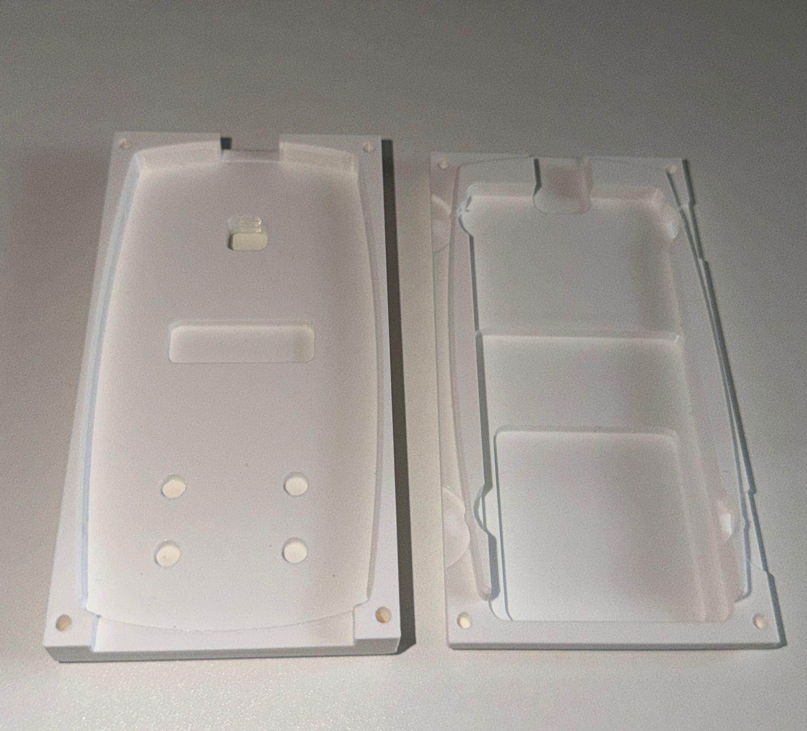
Fig. 17 — Final top surface finish with ironing at 50% speed and 23% flow
One significant change this week was using a PETG support interface via the Bambu Labs P1S filament changer. Instead of printing supports entirely in PLA, the interface layer, the part of the support directly touching the part, was printed in PETG. Because PLA and PETG don't bond well to each other, the supports released cleanly without any surface marking. This solved the support removal problem that had been plaguing me since week 2. Dizon et al. (2018) note that material selection in FDM significantly affects post-processing outcomes, and this is a direct example of that, switching the interface material made a visible difference without changing the geometry or print orientation.
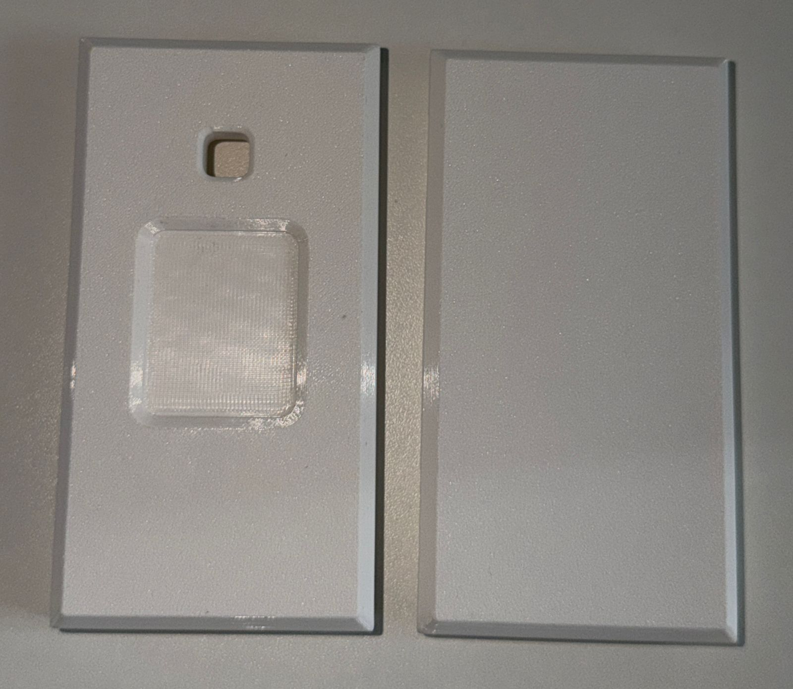
Fig. 18 — Back of the final bottom casing after support removal using PETG interface — noticeably cleaner than previous iterations
FESTO CP Lab — Final Result
The casing was tested on the FESTO CP assembly line and the middle extrude feature measured 1.89mm. The tolerance window is 1.6–2.2mm and the nominal target is 2.0mm, making 1.89mm a strong result — 0.11mm from nominal and well clear of both limits. To get there, I adjusted the extrude depth in CAD to -2.225mm, a small change from the previous iteration that pulled the feature back into the centre of the tolerance band. After bouncing between the lower boundary in week 4 (1.69mm) and the upper boundary in week 5 (2.19mm), the geometry and ironing combination used this week landed the part where it needed to be. Camposeco-Negrete (2020) confirms that iterative parameter optimisation is the standard approach to achieving dimensional accuracy in FDM, and this process has been a practical demonstration of exactly that.
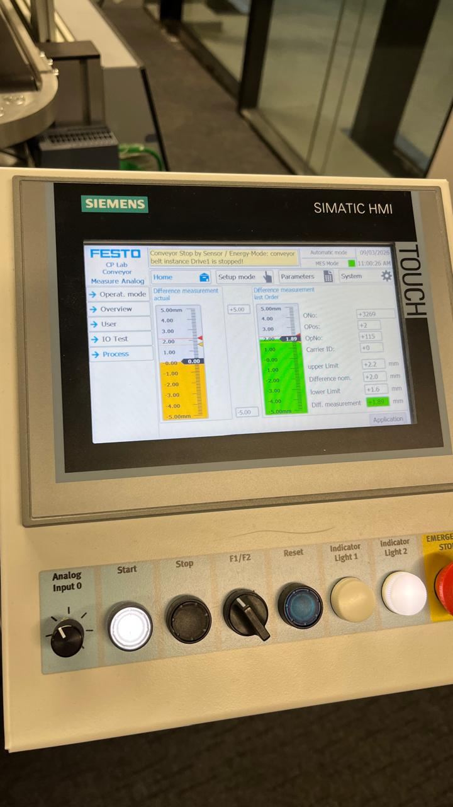
Fig. 19 — FESTO CP lab measurement — middle extrude feature at 1.89mm, within the 1.6–2.2mm tolerance window
Process Flow Diagram
With the final process confirmed, this week I completed the Process Flow Diagram documenting every step from receiving the engineering drawings through to the final approved casing. The PFD follows the standard format used in automotive manufacturing, with operation sequence numbers, process symbols, and descriptions for each step. Notably, it only captures the final optimised process, the failed Prusa prints from the early weeks are not included, since the PFD represents what someone would follow to reproduce the result, not the full experimental history. Lasi et al. (2014) describe process documentation as a core component of Industry 4.0 integration, enabling traceability and consistency across production runs.
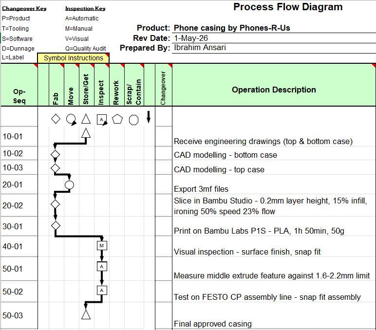
Fig. 20 — Process Flow Diagram for the Phones-R-Us phone casing manufacturing process
Manufacturing Sequence Chart
The Manufacturing Sequence Chart shows how the top and bottom casing are manufactured in parallel before merging at the assembly and inspection stage. Both streams follow the same operations, receiving drawings, CAD modelling, slicing, and printing, before the two parts come together for visual inspection and FESTO testing. This parallel structure reflects how a real production line would handle the two components simultaneously to minimise lead time. Zhong et al. (2017) highlight parallel processing as one of the key efficiency gains enabled by digitally connected manufacturing systems.
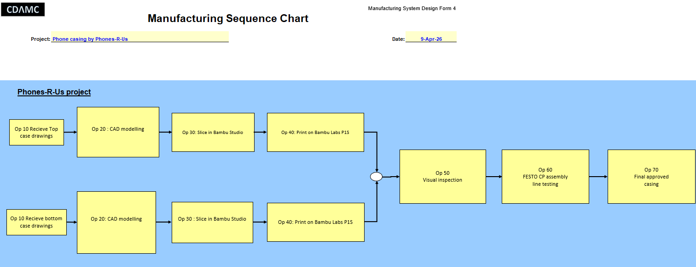
Fig. 21 — Manufacturing Sequence Chart — parallel production streams for top and bottom casing merging at visual inspection
Takt Time Analysis
The Takt Time Analysis calculates how fast the process needs to run to meet the 50,000 units per year target. The shift runs from 6:00 to 14:00 with breaks at 9:00-9:15 and 12:00-12:45, giving 420 minutes of effective production time per day rather than a full 480. Across 208 units of daily demand, the takt time works out to 121 seconds per phone casing. Slack et al. (2016) describe takt time as the fundamental link between customer demand and production rate, and it is this figure that determines how many printers are needed in the Tecnomatix simulation.
The table also shows how takt time would change if demand grew — at 60,000 units per year the takt time drops to 100.8 seconds, at 70,000 it drops to 86.4 seconds. Each reduction puts more pressure on the process and would eventually require either additional printers or a second shift. That analysis feeds directly into the plant simulation work coming in the next few weeks.
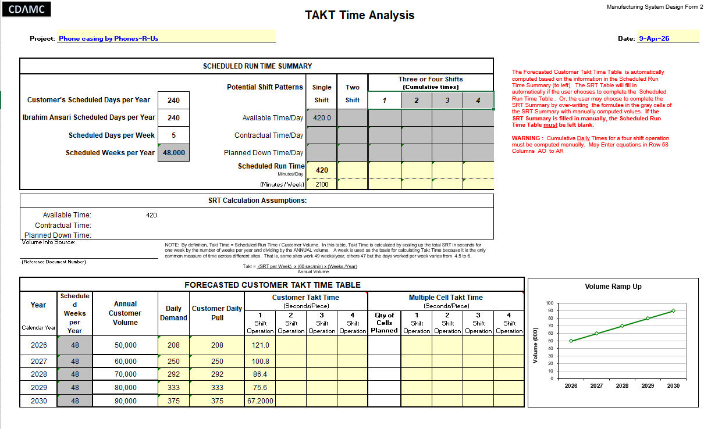
Fig. 22 — Takt Time Analysis — 121 seconds per phone casing at 50,000 units per year on a single 7-hour shift (420 minutes effective production time)
References
Camposeco-Negrete, C. (2020) 'Optimization of FDM parameters for improving part quality, productivity and sustainability of the process using Taguchi methodology', Progress in Additive Manufacturing, 5, pp. 347–360. Available at: https://doi.org/10.1007/s40964-020-00135-9 (Accessed: 10 March 2026).
Dizon, J., Espera, A., Chen, Q. and Advincula, R. (2018) 'Mechanical characterization of 3D-printed polymers', Additive Manufacturing, 20, pp. 44–67. Available at: https://doi.org/10.1016/j.addma.2017.12.002 (Accessed: 10 March 2026).
Lasi, H., Fettke, P., Kemper, H., Feld, T. and Hoffmann, M. (2014) 'Industry 4.0', Business and Information Systems Engineering, 6(4), pp. 239–242. Available at: https://doi.org/10.1007/s12599-014-0334-4 (Accessed: 10 March 2026).
Slack, N., Brandon-Jones, A. and Johnston, R. (2016) Operations Management. 8th edn. Pearson. Available at: https://www.pearson.com/en-gb/subject-catalog/p/operations-management/P200000004939 (Accessed: 10 March 2026).
Zhong, R., Xu, X., Klotz, E. and Newman, S. (2017) 'Intelligent Manufacturing in the Context of Industry 4.0', Engineering, 3(5), pp. 616–630. Available at: https://doi.org/10.1016/J.ENG.2017.05.015 (Accessed: 10 March 2026).
Week 7
Tecnomatix Plant Simulation — Setup & Value Stream Map
17 March 2026
This week shifted focus entirely away from physical manufacturing and into digital simulation. The goal for the next two weeks is to build a plant simulation of the Phones-R-Us assembly process in Tecnomatix Plant Simulation and prove whether the process can hit 50,000 phone casings per year. Before getting into the simulation software, I completed the Value Stream Map to document the current state of the process, where time is spent, where the bottleneck sits, and what the takt time actually is once shift breaks are accounted for.
Value Stream Map
The Value Stream Map captures the full material and information flow from the filament supplier through to the finished phone casing. The process runs as a push system, production runs continuously during shift hours rather than being triggered by individual orders. With a single shift running from 6:00 to 14:00, minus breaks at 9:00-9:15 and 12:00-12:45, the effective working time per day is 420 minutes rather than the full 480. This brings the takt time to 121 seconds per unit at 50,000 units per year. Rother and Shook (2003) describe the value stream map as an essential tool for identifying waste and understanding where the real constraints in a system lie, and mapping the process made the bottleneck immediately obvious.
The 3D printing step at 110 minutes per casing set is the system bottleneck, not the FESTO assembly line. The FESTO line cycles at 29 seconds per phone (governed by the oven station), which means it can assemble phones far faster than the printers can supply casings. The constraint is upstream, in the additive manufacturing step. This is the core insight that drives the printer quantity calculation in week 8.
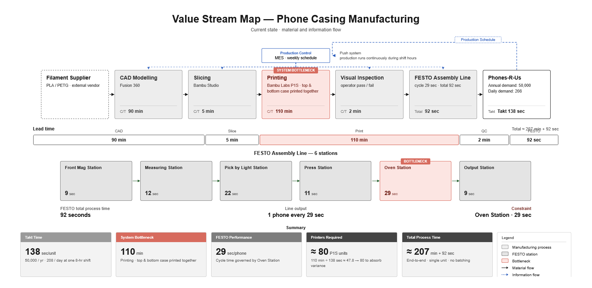
Fig. 23 — Value Stream Map showing material and information flow from filament supplier to Phones-R-Us, with 3D printing identified as the system bottleneck at 110 min/set
Setting up the simulation
The Tecnomatix model replicates the six FESTO CP lab stations, FrontMagStation, MeasuringStation, PickByLightStation, PressStation, OvenStation, and OutputStation all connected by conveyors in the same sequence as the physical lab. Each station was configured with its measured processing time. This week's build was an initial test run without the additive manufacturing machine included, parts were fed directly from a source into the first FESTO station to verify the station times and conveyor logic were working correctly before adding the printer model.
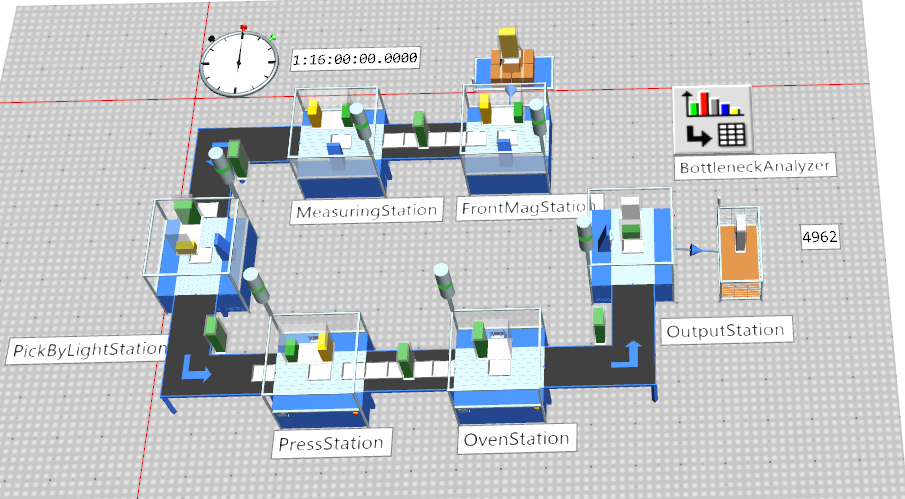
Fig. 24 — Initial Tecnomatix test run with parts fed directly into the FESTO line, verifying station logic before adding the printer model
Each station time was entered as a constant processing time matching the observed FESTO cycle times. Below is a summary of all station configurations:
FESTO station times — Tecnomatix configuration
Station
Processing time
FrontMagStation
9 sec
MeasuringStation
12 sec
PickByLightStation
22 sec
PressStation
11 sec
OvenStation
29 sec
OutputStation
9 sec
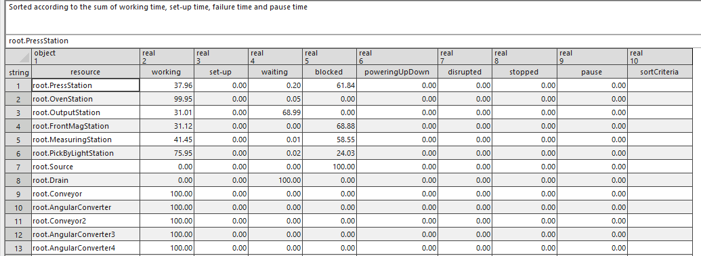
Fig. 25 — Tecnomatix resource statistics from the initial test run — OvenStation at 99.95% working time confirms it as the FESTO line bottleneck
The resource statistics from the test run confirmed what the station times already suggested, the OvenStation ran at 99.95% working time, making it the bottleneck within the FESTO line. Every other station spent significant time blocked or waiting. This is consistent with the takt time analysis and the value stream map. Next week the additive manufacturing machine will be added to the model and the printer quantity experiment will be run to find how many printers are needed to hit 50,000 units per year.
References
Rother, M. and Shook, J. (2003) Learning to See: Value Stream Mapping to Add Value and Eliminate Muda. Lean Enterprise Institute. Available at: https://www.lean.org/store/book/learning-to-see/ (Accessed: 17 March 2026).
Slack, N., Brandon-Jones, A. and Johnston, R. (2016) Operations Management. 8th edn. Pearson. Available at: https://www.pearson.com/en-gb/subject-catalog/p/operations-management/P200000004939 (Accessed: 17 March 2026).
This week the additive manufacturing machine was added to the Tecnomatix model and the experiment manager was used to find the minimum number of printers needed to hit the 50,000 unit annual target. The simulation ran for a full year, 365 days, on a single shift from 6:00 to 14:00 with breaks at 9:00-9:15 and 12:00-12:45, giving 420 minutes of effective production time per day.
Model setup
The additive manufacturing machine was modelled as an array, a grid of printers working in parallel, each with a processing time of 1 hour 50 minutes per casing set. The array was set with a fixed width of 8 printers and the experiment manager varied the number of rows from 4 to 8, testing configurations of 32, 40, 48, 56, and 64 printers. Mourtzis et al. (2014) describe simulation-based optimisation as a core method for determining production capacity in digital manufacturing environments, and this is exactly the approach taken here, running multiple scenarios to find the configuration that meets demand.
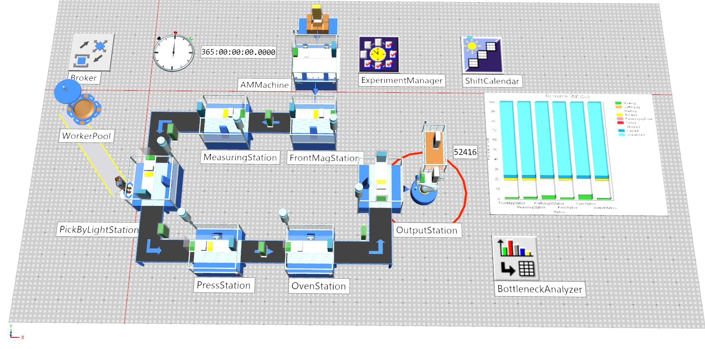
Fig. 26 — Final Tecnomatix model after 365-day simulation run — 52,416 parts produced with 64 printers (8x8 array)
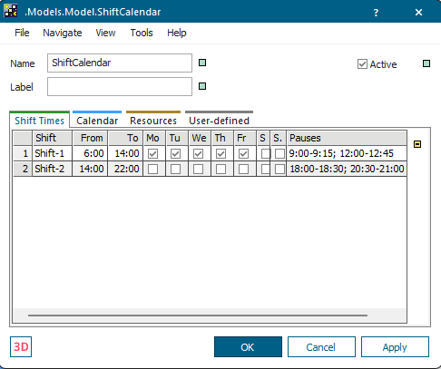
Fig. 27 — Shift calendar configuration — single shift 6:00-14:00, breaks at 9:00-9:15 and 12:00-12:45, giving 420 minutes effective production time per day
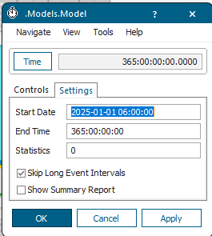
Fig. 28 — Model settings — simulation run from 2025-01-01 for 365 days
Experiment manager results
The experiment manager tested five printer array configurations against the 50,000 unit target. The results showed that 64 printers in an 8x8 array produced 52,416 parts over the year, the only configuration to exceed the 50,000 target. Every smaller configuration fell short.
The resource statistics chart shows that all six FESTO stations spend the majority of their time in an unplanned state, the light blue segment, which represents time outside shift hours. During actual shift time the stations are active, but because the shift is only 7 hours out of a 24-hour day, the stations appear heavily underutilised in percentage terms. This is expected and not a problem, it confirms that the FESTO line is not the constraint. The constraint is the printer array, which runs at 17.14% working time in the final 8x8 configuration, meaning the printers are working for roughly 1 hour 10 minutes out of every 7-hour shift on average per unit cycle. The FESTO line can absorb whatever the printers produce.
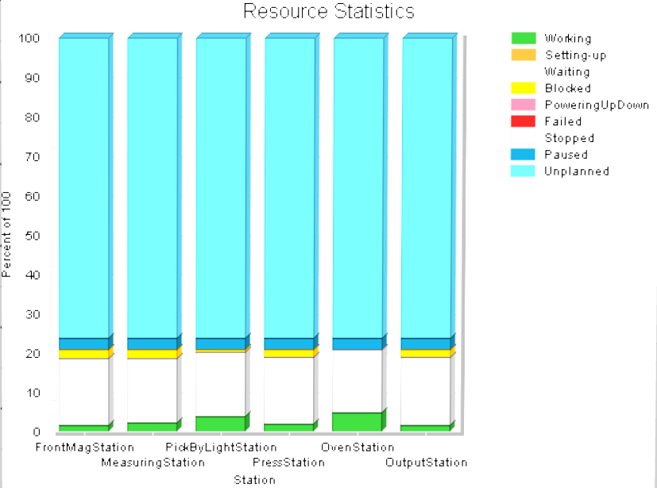
Fig. 30 — Resource statistics — stations show high unplanned time due to single shift operation; working time confirms FESTO line is not the production constraint
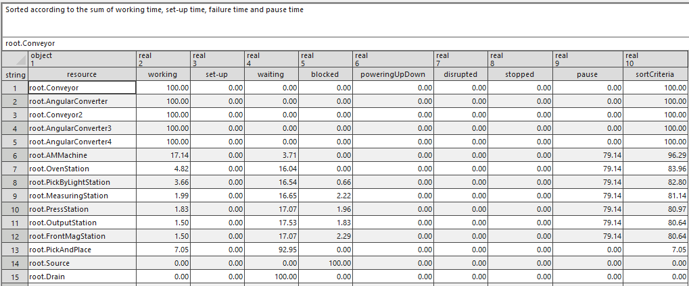
Fig. 31 — Full resource statistics table from the 365-day simulation run
The simulation confirms what the takt time analysis predicted. With a takt time of 121 seconds per unit and a print time of 110 minutes per casing set, the number of printers needed is roughly 110 minutes x 60 seconds / 121 seconds = 54.5, which rounds up to 64 when organised in an 8x8 array to account for shift breaks and variance. The simulation validates this calculation with an actual annual output of 52,416 units.
References
Mourtzis, D., Doukas, M. and Bernidaki, D. (2014) 'Simulation in Manufacturing: Review and Challenges', Procedia CIRP, 25, pp. 213–229. Available at: https://doi.org/10.1016/j.procir.2014.10.032 (Accessed: 24 March 2026).
Slack, N., Brandon-Jones, A. and Johnston, R. (2016) Operations Management. 8th edn. Pearson. Available at: https://www.pearson.com/en-gb/subject-catalog/p/operations-management/P200000004939 (Accessed: 24 March 2026).
Zhong, R., Xu, X., Klotz, E. and Newman, S. (2017) 'Intelligent Manufacturing in the Context of Industry 4.0', Engineering, 3(5), pp. 616–630. Available at: https://doi.org/10.1016/J.ENG.2017.05.015 (Accessed: 24 March 2026).
Week 9
Reflection — Lessons Learned
31 March 2026
Nine weeks in, the project is complete. The brief asked for a casing that fits the master part, passes the FESTO assembly line, and can scale to 50,000 units a year. All three goals have been achieved, the final print measured 1.89mm on the middle extrude feature, well within the 1.6-2.2mm tolerance window, and the simulation confirmed that 64 Bambu Labs P1S printers running a single 7-hour shift can produce 52,416 casings per year. This section reflects on what the process taught me across four areas the brief specifically asks about.
3D printing and digital manufacturing
The iteration process across six weeks showed that additive manufacturing gives you speed but not automatic accuracy. Getting a part to print is straightforward. Getting it to print to tolerance, with a consistent surface finish, and with clean support removal, took five rounds of adjustment. The final combination, 0.2mm layer height, 15% gyroid infill, ironing at 50% speed and 23% flow, and a PETG support interface, only emerged through systematic parameter changes logged week by week. Without that documentation, there would be no way to reproduce the result reliably.
Measuring parts and assembly challenges
The FESTO CP lab measuring station turned out to be the most useful feedback tool in the process. The middle extrude feature went from 1.69mm in week 4 to 2.19mm in week 5 before landing at 1.89mm in week 6, a range of 0.5mm across three iterations driven by CAD geometry changes of less than half a millimetre. That sensitivity is what makes process capability difficult in additive manufacturing. A single passing result does not prove the process is capable. Montgomery (2019) defines process capability as consistent output within specification across multiple runs, and achieving that would require printing and measuring many more parts than the scope of this project allowed.
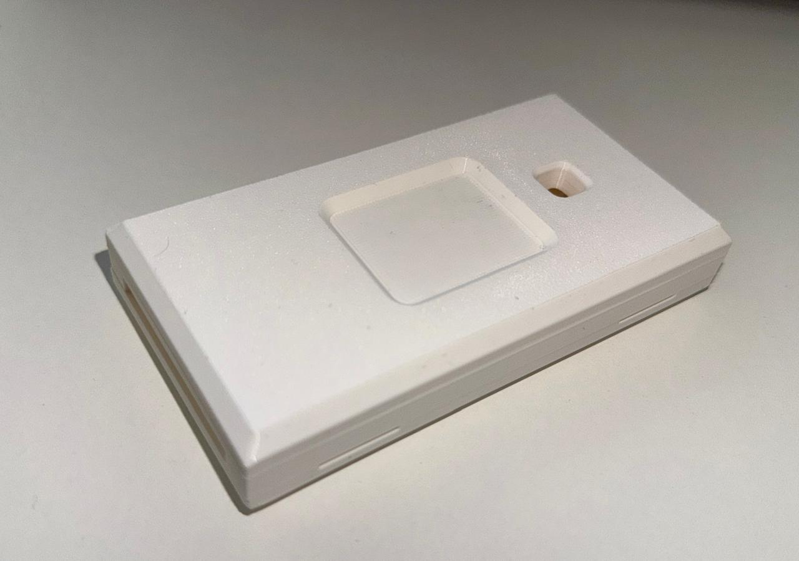
Fig. 32 — Final assembled phone casing — top and bottom case snapped together, ready for FESTO line testing
Multiple supplier variability
The brief framed this project as one supplier among several producing casings to the same drawing for Phones-R-Us. The challenge of multiple suppliers producing parts to identical drawings but with inherent variability is one of the central problems in supply chain management. Even with the same CAD file and the same printer, small changes in filament batch, ambient temperature, or bed calibration can shift dimensions. Tofail et al. (2018) note that batch-to-batch variability in FDM feedstock remains an unresolved challenge at production scale. In a real multi-supplier scenario, each supplier's process capability would need to be formally qualified before their parts could be used interchangeably on the assembly line.
Benefit of plant simulation
The Tecnomatix simulation was the clearest demonstration of Industry 4.0 value in this project. Without it, estimating how many printers are needed to hit 50,000 units would have required guesswork or complex manual calculation. With it, five experiments across different array configurations produced a definitive answer in minutes. Mourtzis et al. (2014) argue that simulation is now an essential tool for production planning precisely because it removes the cost and time of physical trial and error. The finding that 64 printers are needed, not the 80 initially estimated, also shows that simulation can correct overestimates and prevent unnecessary capital expenditure.
Sustainability and lifecycle considerations
FDM printing with PLA has a lower material waste profile than injection moulding, you print only what you need, with no runners, sprues, or tooling scrap. PLA is also compostable under industrial conditions, making end-of-life disposal less environmentally damaging than ABS or polycarbonate alternatives. However, running 64 printers continuously across a 7-hour shift carries a significant energy footprint at scale, and that cost grows linearly with printer count. A lifecycle assessment comparing the total energy consumption of 64 FDM printers against a single injection moulding tool producing the same annual volume would be a meaningful next step. Gebler et al. (2014) estimate that additive manufacturing has the potential to reduce global energy use and CO₂ emissions in manufacturing, but only where it genuinely replaces high-waste conventional processes rather than supplementing them. For low-volume, high-mix production like this project, the case for FDM is strong. At 50,000 units per year and above, injection moulding begins to close the gap.
References
Gebler, M., Schoot Uiterkamp, A. and Visser, C. (2014) 'A global sustainability perspective on 3D printing technologies', Energy Policy, 74, pp. 158–167. Available at: https://doi.org/10.1016/j.enpol.2014.08.033 (Accessed: 31 March 2026).
Montgomery, D. (2019) Introduction to Statistical Quality Control. 8th edn. Wiley. Available at: https://www.wiley.com/en-gb/Introduction+to+Statistical+Quality+Control%2C+8th+Edition-p-9781119657651 (Accessed: 31 March 2026).
Mourtzis, D., Doukas, M. and Bernidaki, D. (2014) 'Simulation in Manufacturing: Review and Challenges', Procedia CIRP, 25, pp. 213–229. Available at: https://doi.org/10.1016/j.procir.2014.10.032 (Accessed: 31 March 2026).
Tofail, S., Koumoulos, E., Bandyopadhyay, A., Bose, S., O'Donoghue, L. and Charitidis, C. (2018) 'Additive manufacturing: scientific and technological challenges, market uptake and opportunities', Materials Today, 21(1), pp. 22–37. Available at: https://doi.org/10.1016/j.mattod.2017.07.001 (Accessed: 31 March 2026).